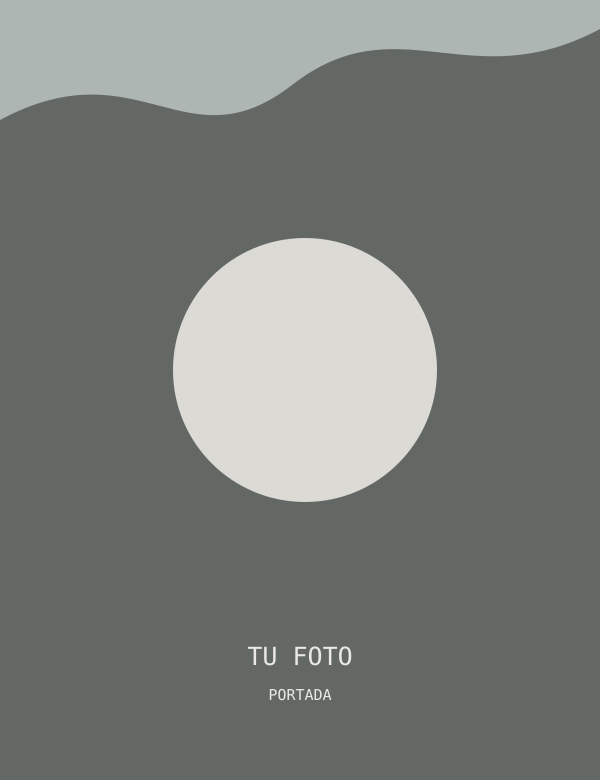
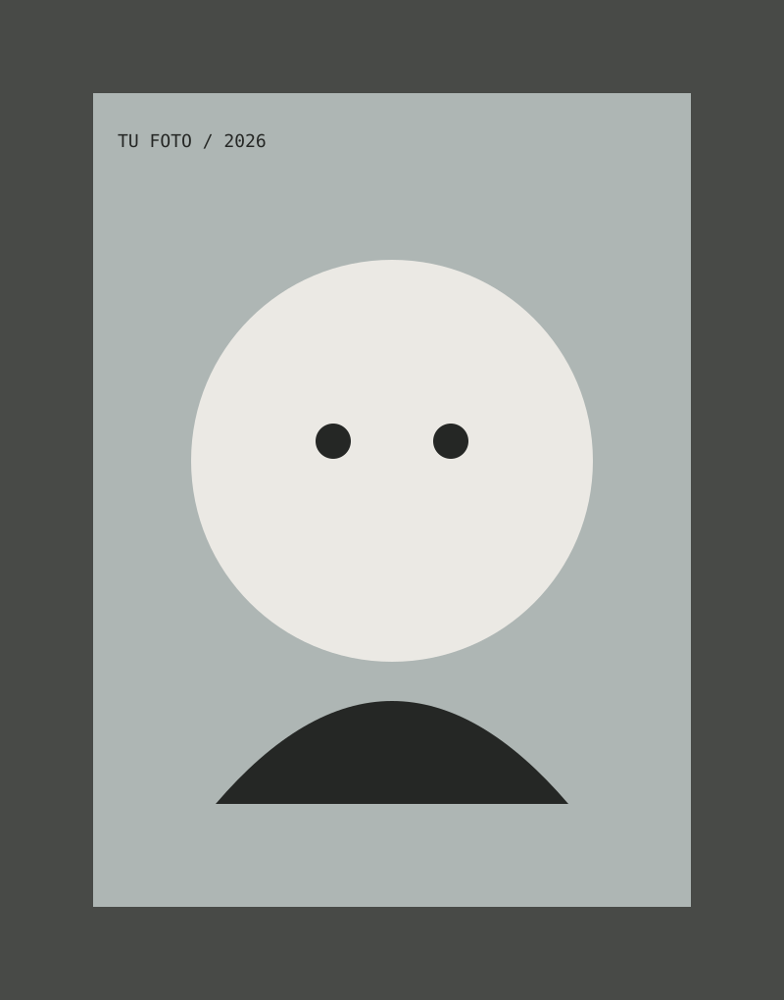

01
Proyecto Uno
Identidad / dirección de arte
Diseño gráfico
y dirección de arte
Archivo
2026

01 / selección
Cinco proyectos de identidad, editorial y dirección de arte. Cada uno pensado como una pequeña colección de imágenes, texturas y símbolos.
Identidad / dirección de arte
Editorial / publicación
Campaña / sistema visual
Packaging / universo de marca
Digital / experiencia
02 / about me

tu fotoSoy Tgwt, diseñadora gráfica y directora de arte. Trabajo entre la imagen, la tipografía y los pequeños detalles que convierten una idea en un mundo propio.
Me interesan las composiciones que parecen encontradas, los materiales táctiles y las identidades con una historia que contar.
03 / contacto